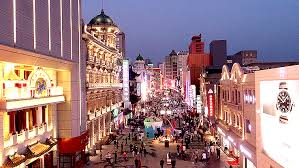
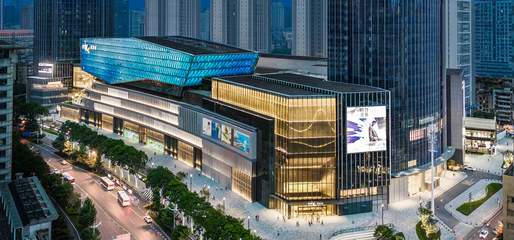
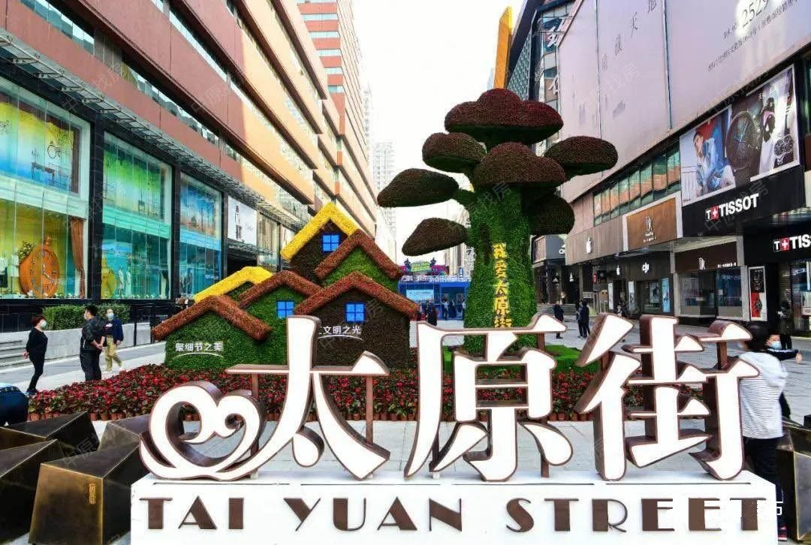
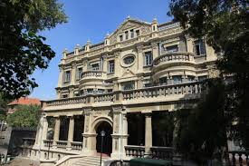
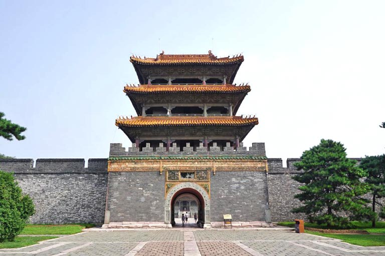
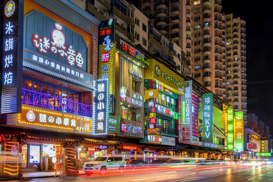
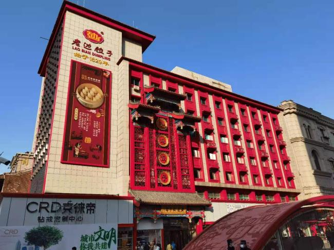
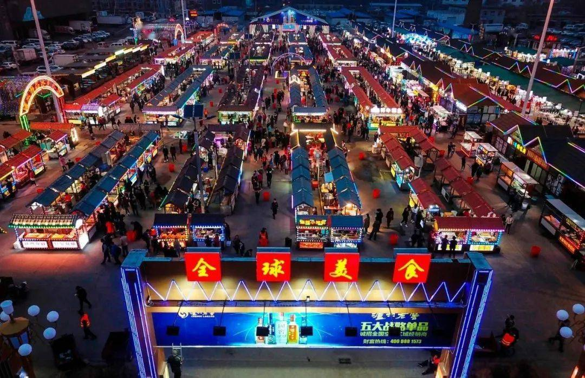
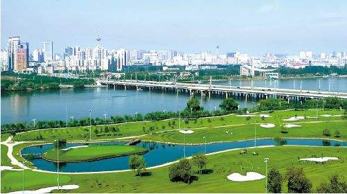
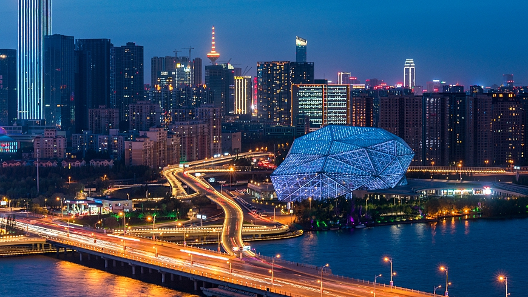

Shenyang Travel Guide
Customized by Interests · Precise Metro Directions
If You're a Shopping Lover

Zhongjie Pedestrian Street
One of the longest commercial pedestrian streets in China, a century-old street combining trendy shopping, time-honored brands and local snacks
Must-buy Items:
- Laobian Dumpling Gift Box (Specialty)
- Bu Laolin Candy (Classic Shenyang Candy)
- Zhongjie 1946 Ice Cream (Famous Online)

Shenyang MixC
Shenyang's high-end shopping mall, a gathering place for first-line brands with complete catering and entertainment facilities
Must-buy Items:
- Northeast Specialty Gift Box (Ginseng, Pilose Antler)
- Local Designer Brand Clothing
- MixC Custom Souvenirs

Taiyuan Street Business District
A well-established core business district covering from affordable to mid-to-high-end products, suitable for one-stop shopping
Must-buy Items:
- Li Lianggui Smoked Pork Pancake (Vacuum Packed)
- Northeast Big Board Ice Cream (Bulk Pack)
- Shenyang Mint Cultural and Creative Souvenirs
If You're a History & Culture Lover

Shenyang Palace Museum
One of the only two surviving imperial palace complexes in China, with strong Manchu style and a large collection of court cultural relics, a must-visit to understand early Qing history

Marshal Zhang's Mansion
The official residence and private mansion of Zhang Zuolin and Zhang Xueliang, featuring a Chinese-Western blended architectural style, restoring key scenes of Northeast modern history

Zhao Mausoleum (Beiling Park)
The mausoleum of Huang Taiji, Emperor Taizong of the Qing Dynasty, the largest among the three mausoleums outside the pass, retaining the complete pattern of the imperial mausoleum of the Qing Dynasty
If You're a Food Lover

Xita Street
The largest Korean ethnic settlement in Northeast China, a gathering place for Korean-style food

Laobian Dumpling House (Zhongjie Main Store)
A century-old time-honored brand with intangible cultural heritage dumpling-making craftsmanship

Xingshun Night Market (Tawan Branch)
One of the largest night markets in Northeast China, where you can taste all Northeast snacks in one stop
If You're a Nature & Leisure Lover

Shenyang Expo Garden
Former Shenyang Botanical Garden, with flowers in all seasons and a large green area, suitable for picnics, hiking and flower viewing

Hunhe South Bank Forest Park
Shenyang's "urban lung", the core area of the Hunhe landscape belt, suitable for cycling, walking and viewing the river scenery
Qipanshan Scenic Area
A natural oxygen bar in the outskirts of Shenyang, with mountains and waters, suitable for one-day trips, camping and mountain climbing